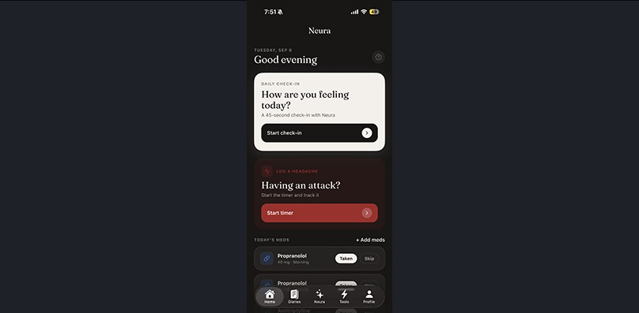

<!doctype html><html lang="en"><head><meta charset="utf-8"><meta name="viewport" content="width=device-width,initial-scale=1"><title>Patient Engagement · NeuroDiscovery AI</title>
<link href="https://fonts.googleapis.com/css2?family=Instrument+Sans:wght@400;500;600;700&display=swap" rel="stylesheet"><link rel="stylesheet" href="site.css"><script>(function(){var d=document.documentElement;function f(){var w=window.innerWidth;if(w>=1100){d.classList.add("fz");d.style.zoom=w<1920?String(w/1920):""}else{d.classList.remove("fz");d.style.zoom=""}}f();addEventListener("resize",f)})()</script></head>
<body data-page="pe"><main id="page"></main><script src="site.js"></script><script>
const TABS=[['Voice companion','Two minutes a day. Speak naturally. Your personal AI assistant listens, understands, and remembers. No typing, no forms—just natural conversation that learns what matters most to you every single day.'],['Trigger insights','NeuraCare connects sleep, stress, diet and weather to symptoms, surfacing the triggers patients can’t see on their own.'],['Disease Report','A clear, shareable report of symptoms, attacks and adherence over time—ready for the next appointment.'],['Patient tools','Attack timers, medication reminders and logs that take seconds, built for the moments that matter.'],['Learning hub','Trusted, neurologist-reviewed education about each condition and treatment, personalized to the patient.']];
render([
['hero',{img:'pe-hero.jpg',video:'pe-sphere.mp4',vsoft:1,vbox:[832,-128,960,960],h:'Empower patients with an AI companion built for neurology',p:'Help patients and providers understand what’s really happening for better disease management. Meet NeuraCare—an AI companion app that listens and replaces the burden of manual tracking with two-minute voice conversations.'}],
['cards',{h:'Keep patients engaged and providers informed',p:'Built for the entire neurological ecosystem, loved by patients.',items:[
 ['screen','Higher patient engagement','AI companion that feels like a personal assistant. Two-minute voice conversations—no forms, just progress. Remembers what matters, adapts daily, keeps patients coming back because tracking finally feels easy. Custom incentives transform adherence into achievement.'],
 ['search','Real trigger discovery','Research-grade insights from prospective data, not guesswork. Tracks wellbeing, timeline, and adherence patterns and many more. Real correlations your patients can’t see. Actionable intelligence for providers, every day.'],
 ['loop','Clean data to EHR','Structured data from the app flows directly to patient EHR profiles. Every session writes attack logs, adherence data, and validated insights. Zero manual entry. Clinical data that’s ready to use, not clean up.'],
 ['brain','Longitudinal disease tracking','Monitor how your patient’s condition evolves over months and years. Natural language queries about disease progression and patterns—get instant answers grounded in their own data. Understand the full arc of their neurology health, not just today’s snapshot.']]}],
['raw',{html:`<section class="alt"><div class="wrap"><h2 class="h2 reveal">See what patients experience</h2><p class="sub reveal">Built on NeuroLLM, a multimodal neuroimaging and clinical AI foundation.</p>
<div class="ptabs reveal" id="ptabs">${TABS.map((t,i)=>`<button class="${i?'':'on'}" data-i="${i}">${t[0]}</button>`).join('')}</div>
<div class="ppanel"><div id="ptext"></div></div></div></section>
<section class="alt2"><div class="wrap loop"><div><h2 class="h2 reveal">The daily loop that keeps patients engaged</h2><p class="sub reveal">Built on NeuroLLM, a multimodal neuroimaging and clinical AI foundation.</p><div class="howc reveal"><span style="display:block;width:30px;color:var(--blue)">${ic('note')}</span><h4>How it works</h4><p>Patient opens NeuraCare. Two-minute conversation. Remembers yesterday’s answers. Asks about what’s still unknown. Logs adherence. Surfaces insights. By day seven, patients hit their first milestone and understand their condition deeply. Meanwhile, structured data flows to their provider—real adherence, real patterns, real intelligence. The loop never runs dry because the profile defines what’s unknown.</p></div></div>
<div class="steps reveal">${[['Ask','Themed daily question'],['Listen','Silent capture &amp; inference'],['Persist','Knowledge graph update'],['Act','Insight or adherence nudge'],['Persist','Knowledge graph update'],['Act','Insight or adherence nudge']].map(([t,s],i)=>`<div><b>0${i+1}</b><span><h5>${t}</h5><small>${s}</small></span></div>`).join('')}</div></div></section>`}],
['cta',{h:'See how AI companion keeps patient engaged',p:'Get clinical-grade insights from real data and deliver better clinical care. Get started today.'}]
]);
const showTab=i=>{const t=TABS[i];document.getElementById('ptext').innerHTML=`<div class="k"><span>0${i+1}</span></div><h3 style="margin-top:28px">${t[0]}</h3><p>${t[1]}</p>`;document.querySelectorAll('#ptabs button').forEach((b,j)=>b.classList.toggle('on',j==i))};
document.getElementById('ptabs').onclick=e=>{const b=e.target.closest('button');if(b)showTab(+b.dataset.i)};showTab(0);
</script></body></html>
